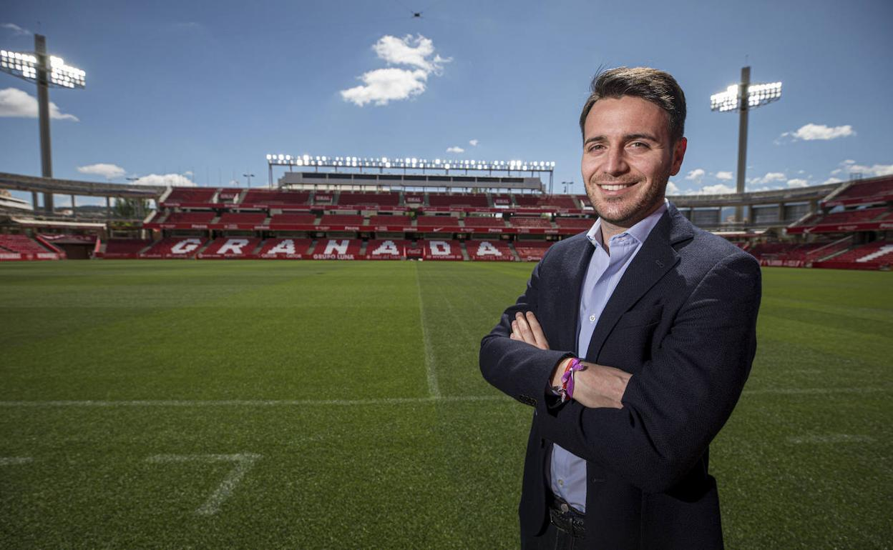

Historia
Los primeros años (1970-1988)
El primer partido de fútbol femenino que jugó un equipo del FC Barcelona fue el día de Navidad de 1970 con motivo de un festival benéfico. El encuentro enfrentó en el Camp Nou a las jugadoras azulgranas, entrenadas por Antoni Ramallets, contra la UE Centelles. Posteriormente participó en el primer campeonato oficioso de Cataluña de fútbol femenino, celebrado en la temporada 1971-1972.1
La primera época dorada (1988-2001)
Durante los años 80 y los años 90 la entidad participó bajo el nombre de Club Femení Barcelona, y utilizó los colores, distintivos e instalaciones del Fútbol Club Barcelona a pesar de no haber sido instituida como sección oficial. De hecho, el CF Barcelona fue uno de los nueve clubes que fundaron la primera Superliga en la temporada 1988-89. No obstante, durante aquellos años obtuvo sus mayores éxitos en la competición de la Copa de la Reina, de la que fue finalista en 1991 y campeón en 1994. Con la desaparición de la Superliga en 1996, el equipo pasó a competir en uno de los cuatro grupos de Primera Nacional de Fútbol Femenino que la sustituyeron.
Los años grises (2001-2007)
En 2001 el Fútbol Club Barcelona incorporó definitivamente el fútbol femenino como sección oficial con motivo de la creación de la nueva Superliga. Sin embargo, el equipo acabó por no ser incluido al no quedar entre los primeros clasificados de la temporada anterior y continuó compitiendo en la segunda categoría de Primera Nacional. Después de dos intentos fallidos, en la temporada 2003-04, superó la promoción de ascenso y ascendió a la Superliga.2
Logrado el ascenso, la sección gozó de cierta popularidad en la temporada 2004-05 a causa del fichaje de la internacional mexicana Maribel Domínguez y la española Algecireña María Luisa Coimbra3 Pero aquello no se tradujo en una consolidación deportiva del equipo. Dos temporadas después, en la 2006-07, el equipo perdía la categoría e incluso se llegaba a plantear su desaparición.4
Resurgimiento (2007-2010)
En la temporada 2006-07 Xavi Llorens comenzó su etapa como entrenador del equipo de fútbol femenino del FC Barcelona en sustitución de Natalia Astrain.
El equipo entrenado ahora por Xavi Llorens, retornó a la Superliga al final de la temporada 2007-08 y en los años siguientes se situó en los primeros puestos de la competición con un gran nivel de juego. Además, entre 2009 y 2012 se adjudicó todas las ediciones de la Copa Cataluña.
Nueva época dorada (2010-2017)
A partir de 2010 la progresión del equipo se tradujo en la consecución de títulos nacionales.
En la temporada 2016-2017 el conjunto azulgrana logró su quinta Copa de la Reina después de vencer al At. Madrid Femenino 4-1 en la final.20 Tras lograr este título, el entrenador Xavi Llorens se despidió del banquillo azulgrana después de once temporadas, en las que lideró el FC Barcelona de fútbol femenino y consiguió seis Copas Catalunya, cuatro Copas de la Reina y cuatro Ligas.21
Nueva etapa (2017-actualidad)
En el mes de junio de 2017, Fran Sánchez fue designado entrenador del Barça Femenino para dirigir el equipo en las dos próximas temporadas, hasta 2019, con opción a una tercera.22 En el mes de enero de 2019 Fran Sánchez fue sustituido por Lluís Cortés como nuevo entrenador.2324
